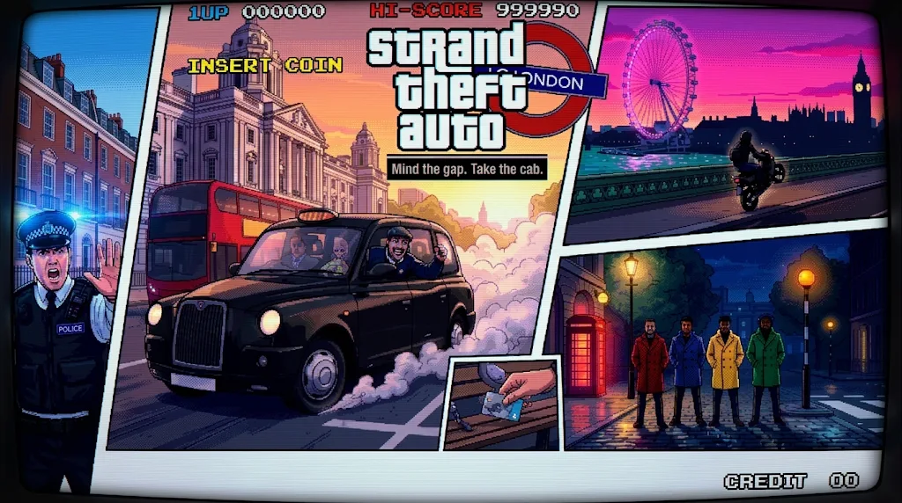

Game ended.

Double-click start-game.cmd in the project folder.It starts the game and opens your browser.
Connect both phones to the same Wi-Fi as the game and scan one code per phone.
Click a key, then press its replacement. Esc cancels. Conflicting keys are rejected.